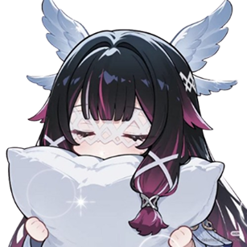
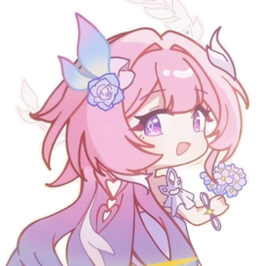
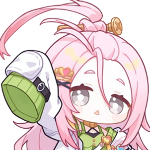

Welcome to my FIRST website ! Scroll down to see who i am, what kinda game i love, something i hate and many more !
Get to know me!
Hello Im yuzyi ! thats the name i use in game XD !
I'm 19 gonna be 20 next year (omg)
i'm a cybersecurity engineering 1st year
and i'm from indonesia ! NTMY

i love playing games like genshin ! ✧
My fav food is fried rice XD
i like designing stuff and doing art on ibis paint
i also love eating (a lot, lol) and listening to music
And pastel colors are my fav ! 🌸
i'm the eldest daughter with 3 younger siblings ! ✧
i also have lots of cousins, aunties, and uncles
my family is super fun and always so kind to me
i'm really grateful for them 🌸
things i don't like: durian, jackfruit, and bitter food (ew) ✧
i love coffee, but NOT the bitter kind XD
i joined organizations back in school, and i'm determined to be more active in college than i was in high school !
fun fact: i've tried every class position, from chairperson to treasurer, and they were all so fun ♡
i'm a girly girl who's still learning makeup 🎀
thanks for stopping by my FIRST website ! ✧
i hope you had fun getting to know me XD
see you again soon, and stay cute !!
Back to top